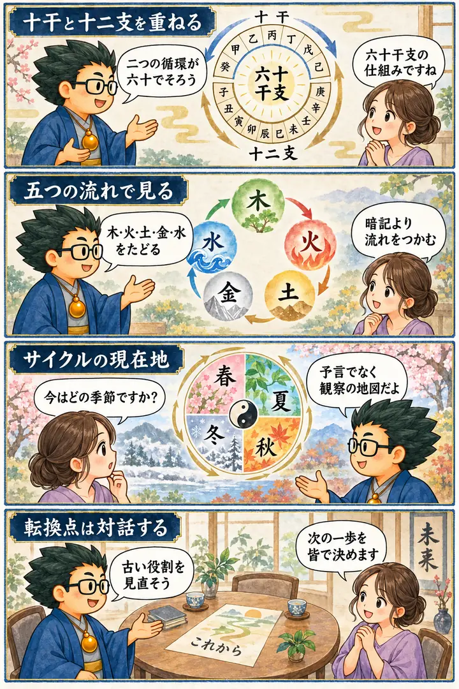

2025年 無料講座・第6回
干支の六十分類
この回の要約
六十干支は、六十個の性格ラベルを丸暗記する表ではなく、二つの周期がいつ再びそろうかを見る地図です。
十干の十と十二支の十二は、陰陽の対応を保ちながら六十で一巡します。講義では、その構造を木火土金水、春夏秋冬、一日・一年、商品や組織のサイクルへ広げ、いま何が始まり、育ち、実り、見直しへ向かっているかを考えます。
投資、新NISA、企業、政治、社会変化、火と水、神道、桃太郎、如意宝珠に関する説明は、講師の当時の見立て・思想・象徴解釈を含みます。金融助言や確定した未来予測ではありません。確認可能な六十干支の構造と手指衛生の歴史は、公的・医学資料と分けて示します。
4コマ漫画でつかむ

タイムスタンプ
時間を押すと、上の動画がその場面から再生されます。
- 00:00導入・干支は十二だけではない
- 03:08十干と十二支、乙巳を読む
- 04:20失われた言葉を取り戻すという見立て
- 08:27太陽暦・太陰暦・太陰太陽暦
- 12:17巳年と相場をめぐる未来予測
- 14:38木火土金水を五つの段階として見る
- 16:20火の段階――試練と学習
- 18:42土・金・水――信頼、役割、統合
- 25:17十干と十二支が六十で一巡する
- 26:30時計・一日・一年を回転として見る
- 28:02春夏秋冬とプロダクトサイクル
- 29:52十と十二の周期を人物・組織へ重ねる
- 31:57ミクロとマクロを結ぶ社会予測
- 36:23二つの転換点と、見直しの必要
- 39:16組織の目的を話し合い、統合する
- 43:01価値の回復と応援をめぐる提案
- 48:29動物タイプを変化の兆しとして読む
- 51:03桃太郎の比喩で対立をまとめる
- 52:47適職と天職、火と水を統合する
- 56:09六十干支は回転を見る地図
- 58:07センメルワイスと手指衛生の歴史
- 1:01:25まとめ
覚えておきたいこと
- 干支は十干と十二支の組み合わせで、六十で一巡する。
- 十と十二の最小公倍数が六十で、陰陽の対応する組み合わせが進む。
- 木火土金水と春夏秋冬は、現在地を振り返る補助線として使う。
- 占術上の周期を、株価・政治・企業の確定した未来予測にしない。
- 転換点では、組織の目的と異なる立場の声を確認する。
- 歴史的事実と、講師がそこから広げた象徴・社会の比喩を分ける。
復習ポイント
講義内の占術上の説明・時代の読み・象徴的な解釈は、講師の見立てです。客観的な事実や将来を保証するものではありません。